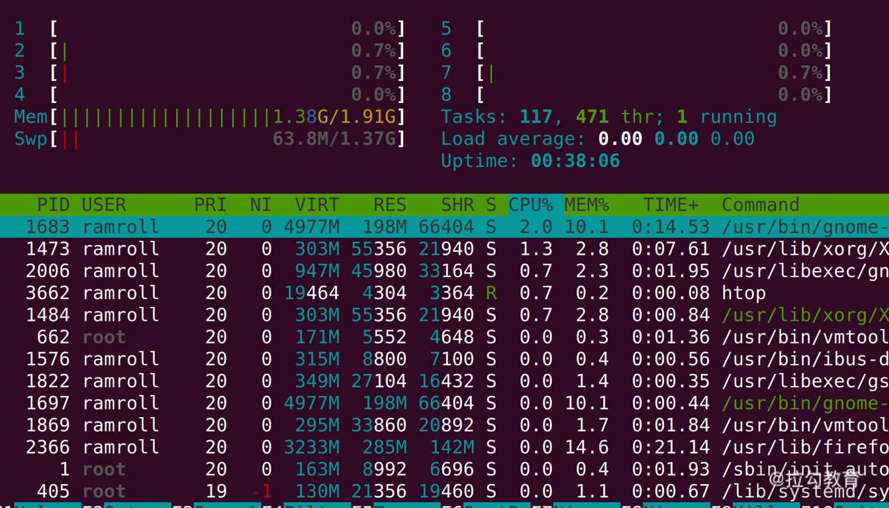
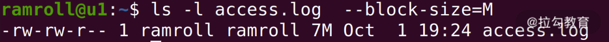
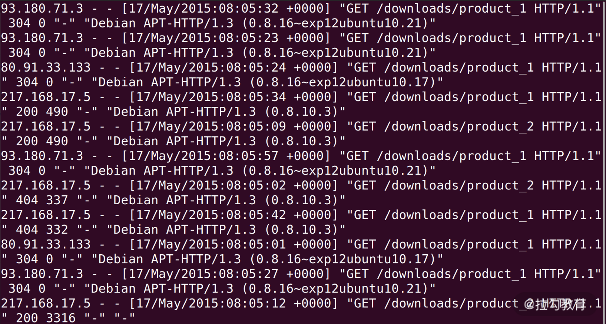
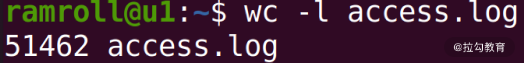
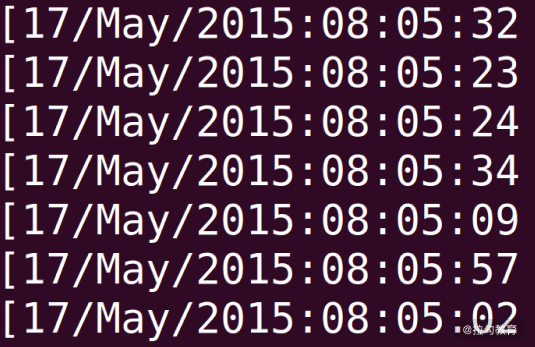
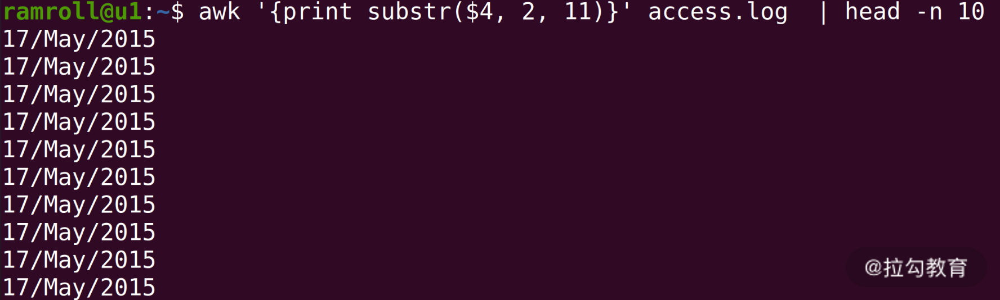
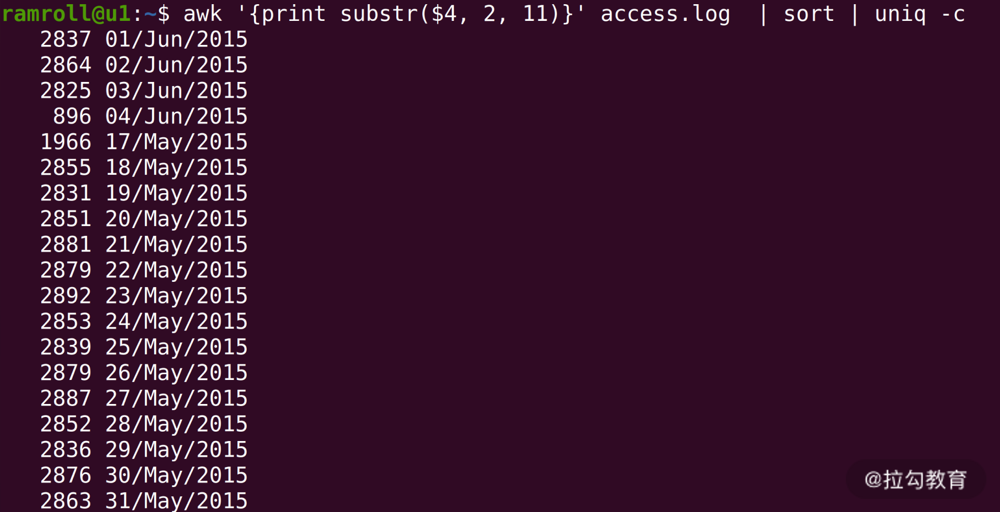
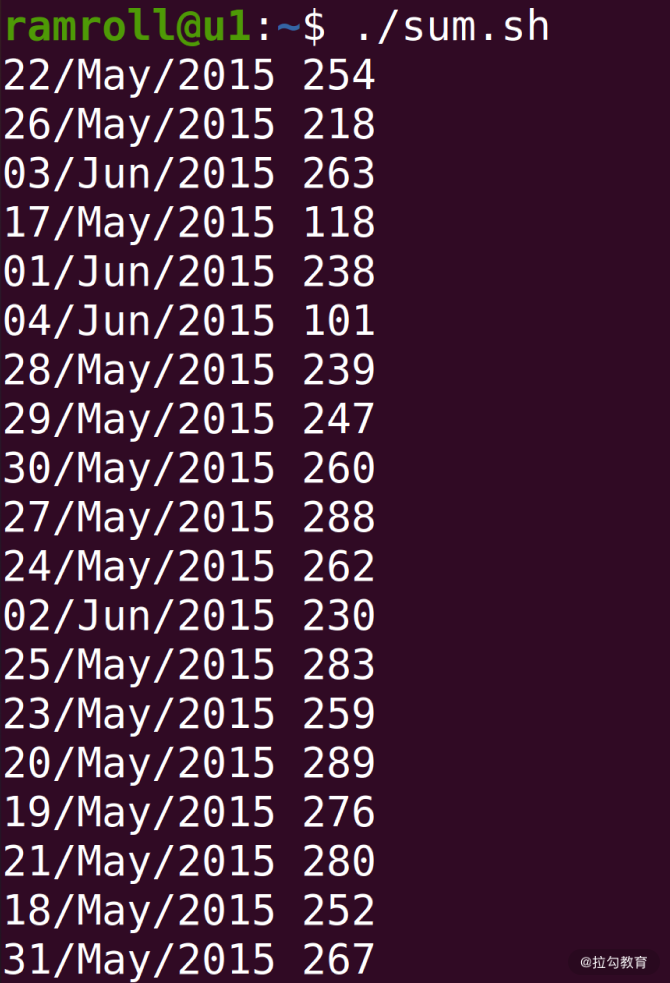

- 00 开篇词 为什么大厂面试必考操作系统？.md.html
- 00 课前必读 构建知识体系，可以这样做！.md.html
- 01 计算机是什么：“如何把程序写好”这个问题是可计算的吗？.md.html
- 02 程序的执行：相比 32 位，64 位的优势是什么？（上）.md.html
- 03 程序的执行：相比 32 位，64 位的优势是什么？（下）.md.html
- 04 构造复杂的程序：将一个递归函数转成非递归函数的通用方法.md.html
- 05 存储器分级：L1 Cache 比内存和 SSD 快多少倍？.md.html
- 05 (1) 加餐 练习题详解（一）.md.html
- 06 目录结构和文件管理指令：rm -rf 指令的作用是？.md.html
- 07 进程、重定向和管道指令：xargs 指令的作用是？.md.html
- 08 用户和权限管理指令： 请简述 Linux 权限划分的原则？.md.html
- 09 Linux 中的网络指令：如何查看一个域名有哪些 NS 记录？.md.html
- 10 软件的安装： 编译安装和包管理器安装有什么优势和劣势？.md.html
- 11 高级技巧之日志分析：利用 Linux 指令分析 Web 日志.md.html
- 12 高级技巧之集群部署：利用 Linux 指令同时在多台机器部署程序.md.html
- 12 (1)加餐 练习题详解（二）.md.html
- 13 操作系统内核：Linux 内核和 Windows 内核有什么区别？.md.html
- 14 用户态和内核态：用户态线程和内核态线程有什么区别？.md.html
- 15 中断和中断向量：Javajs 等语言为什么可以捕获到键盘输入？.md.html
- 16 WinMacUnixLinux 的区别和联系：为什么 Debian 漏洞排名第一还这么多人用？.md.html
- 16 (1)加餐 练习题详解（三）.md.html
- 17 进程和线程：进程的开销比线程大在了哪里？.md.html
- 18 锁、信号量和分布式锁：如何控制同一时间只有 2 个线程运行？.md.html
- 19 乐观锁、区块链：除了上锁还有哪些并发控制方法？.md.html
- 20 线程的调度：线程调度都有哪些方法？.md.html
- 21 哲学家就餐问题：什么情况下会触发饥饿和死锁？.md.html
- 22 进程间通信： 进程间通信都有哪些方法？.md.html
- 23 分析服务的特性：我的服务应该开多少个进程、多少个线程？.md.html
- 23 (1)加餐 练习题详解（四）.md.html
- 24 虚拟内存 ：一个程序最多能使用多少内存？.md.html
- 25 内存管理单元： 什么情况下使用大内存分页？.md.html
- 26 缓存置换算法： LRU 用什么数据结构实现更合理？.md.html
- 27 内存回收上篇：如何解决内存的循环引用问题？.md.html
- 28 内存回收下篇：三色标记-清除算法是怎么回事？.md.html
- 28 (1)加餐 练习题详解（五）.md.html
- 29 Linux 下的各个目录有什么作用？.md.html
- 30 文件系统的底层实现：FAT、NTFS 和 Ext3 有什么区别？.md.html
- 31 数据库文件系统实例：MySQL 中 B 树和 B+ 树有什么区别？.md.html
- 32 HDFS 介绍：分布式文件系统是怎么回事？.md.html
- 32 (1)加餐 练习题详解（六）.md.html
- 33 互联网协议群（TCPIP）：多路复用是怎么回事？.md.html
- 34 UDP 协议：UDP 和 TCP 相比快在哪里？.md.html
- 35 Linux 的 IO 模式：selectpollepoll 有什么区别？.md.html
- 36 公私钥体系和网络安全：什么是中间人攻击？.md.html
- 36 (1)加餐 练习题详解（七）.md.html
- 37 虚拟化技术介绍：VMware 和 Docker 的区别？.md.html
- 38 容器编排技术：如何利用 K8s 和 Docker Swarm 管理微服务？.md.html
- 39 Linux 架构优秀在哪里.md.html
- 40 商业操作系统：电商操作系统是不是一个噱头？.md.html
- 40 (1)加餐 练习题详解（八）.md.html
- 41 结束语 论程序员的发展——信仰、选择和博弈.md.html
11 高级技巧之日志分析：利用 Linux 指令分析 Web 日志
著名的黑客、自由软件运动的先驱理查德.斯托曼说过，“编程不是科学，编程是手艺”。可见，要想真正搞好编程，除了学习理论知识，还需要在实际的工作场景中进行反复的锤炼。
所以今天我们将结合实际的工作场景，带你利用 Linux 指令分析 Web 日志，这其中包含很多小技巧，掌握了本课时的内容，将对你将来分析线上日志、了解用户行为和查找问题有非常大地帮助。
本课时将用到一个大概有 5W 多条记录的nginx日志文件，你可以在 GitHub上下载。 下面就请你和我一起，通过分析这个nginx日志文件，去锤炼我们的手艺。
第一步：能不能这样做？
当我们想要分析一个线上文件的时候，首先要思考，能不能这样做？ 这里你可以先用htop指令看一下当前的负载。如果你的机器上没有htop，可以考虑用yum或者apt去安装。

如上图所示，我的机器上 8 个 CPU 都是 0 负载，2G的内存用了一半多，还有富余。 我们用wget将目标文件下载到本地（如果你没有 wget，可以用yum或者apt安装）。
wget 某网址（自己替代）
然后我们用ls查看文件大小。发现这只是一个 7M 的文件，因此对线上的影响可以忽略不计。如果文件太大，建议你用scp指令将文件拷贝到闲置服务器再分析。下图中我使用了--block-size让ls以M为单位显示文件大小。

确定了当前机器的CPU和内存允许我进行分析后，我们就可以开始第二步操作了。
第二步：LESS 日志文件
在分析日志前，给你提个醒，记得要less一下，看看日志里面的内容。之前我们说过，尽量使用less这种不需要读取全部文件的指令，因为在线上执行cat是一件非常危险的事情，这可能导致线上服务器资源不足。

如上图所示，我们看到nginx的access_log每一行都是一次用户的访问，从左到右依次是：
- IP 地址；
- 时间；
- HTTP 请求的方法、路径和协议版本、返回的状态码；
- User Agent。
第三步：PV 分析
PV（Page View），用户每访问一个页面就是一次Page View。对于nginx的acess_log来说，分析 PV 非常简单，我们直接使用wc -l就可以看到整体的PV。

如上图所示：我们看到了一共有 51462 条 PV。
第四步：PV 分组
通常一个日志中可能有几天的 PV，为了得到更加直观的数据，有时候需要按天进行分组。为了简化这个问题，我们先来看看日志中都有哪些天的日志。
使用awk '{print $4}' access.log | less可以看到如下结果。awk是一个处理文本的领域专有语言。这里就牵扯到领域专有语言这个概念，英文是Domain Specific Language。领域专有语言，就是为了处理某个领域专门设计的语言。比如awk是用来分析处理文本的DSL，html是专门用来描述网页的DSL，SQL是专门用来查询数据的DSL……大家还可以根据自己的业务设计某种针对业务的DSL。
你可以看到我们用$4代表文本的第 4 列，也就是时间所在的这一列，如下图所示：

我们想要按天统计，可以利用 awk提供的字符串截取的能力。

上图中，我们使用awk的substr函数，数字2代表从第 2 个字符开始，数字11代表截取 11 个字符。
接下来我们就可以分组统计每天的日志条数了。

上图中，使用sort进行排序，然后使用uniq -c进行统计。你可以看到从 2015 年 5 月 17 号一直到 6 月 4 号的日志，还可以看到每天的 PV 量大概是在 2000~3000 之间。
第五步：分析 UV
接下来我们分析 UV。UV（Uniq Visitor），也就是统计访问人数。通常确定用户的身份是一个复杂的事情，但是我们可以用 IP 访问来近似统计 UV。
上图中，我们使用 awk 去打印$1也就是第一列，接着sort排序，然后用uniq去重，最后用wc -l查看条数。 这样我们就知道日志文件中一共有2660个 IP，也就是2660个 UV。
第六步：分组分析 UV
接下来我们尝试按天分组分析每天的 UV 情况。这个情况比较复杂，需要较多的指令，我们先创建一个叫作sum.sh的bash脚本文件，写入如下内容：
#!/usr/bin/bash
awk '{print substr($4, 2, 11) " " $1}' access.log |\
sort | uniq |\
awk '{uv[$1]++;next}END{for (ip in uv) print ip, uv[ip]}'
具体分析如下。
- 文件首部我们使用
#!，表示我们将使用后面的/usr/bin/bash执行这个文件。 - 第一次
awk我们将第 4 列的日期和第 1 列的ip地址拼接在一起。 - 下面的
sort是把整个文件进行一次字典序排序，相当于先根据日期排序，再根据 IP 排序。 - 接下来我们用
uniq去重，日期 +IP 相同的行就只保留一个。 - 最后的
awk我们再根据第 1 列的时间和第 2 列的 IP 进行统计。
为了理解最后这一行描述，我们先来简单了解下awk的原理。
awk本身是逐行进行处理的。因此我们的next关键字是提醒awk跳转到下一行输入。 对每一行输入，awk会根据第 1 列的字符串（也就是日期）进行累加。之后的END关键字代表一个触发器，就是 END 后面用 {} 括起来的语句会在所有输入都处理完之后执行——当所有输入都执行完，结果被累加到uv中后，通过foreach遍历uv中所有的key，去打印ip和ip对应的数量。
编写完上面的脚本之后，我们保存退出编辑器。接着执行chmod +x ./sum.sh，给sum.sh增加执行权限。然后我们可以像下图这样执行，获得结果：

如上图，IP地址已经按天进行统计好了。
总结
今天我们结合一个简单的实战场景——Web 日志分析与统计练习了之前学过的指令，提高熟练程度。此外，我们还一起学习了新知识——功能强大的awk文本处理语言。在实战中，我们对一个nginx的access_log进行了简单的数据分析，直观地获得了这个网站的访问情况。
我们在日常的工作中会遇到各种各样的日志，除了 nginx 的日志，还有应用日志、前端日志、监控日志等等。你都可以利用今天学习的方法，去做数据分析，然后从中得出结论。